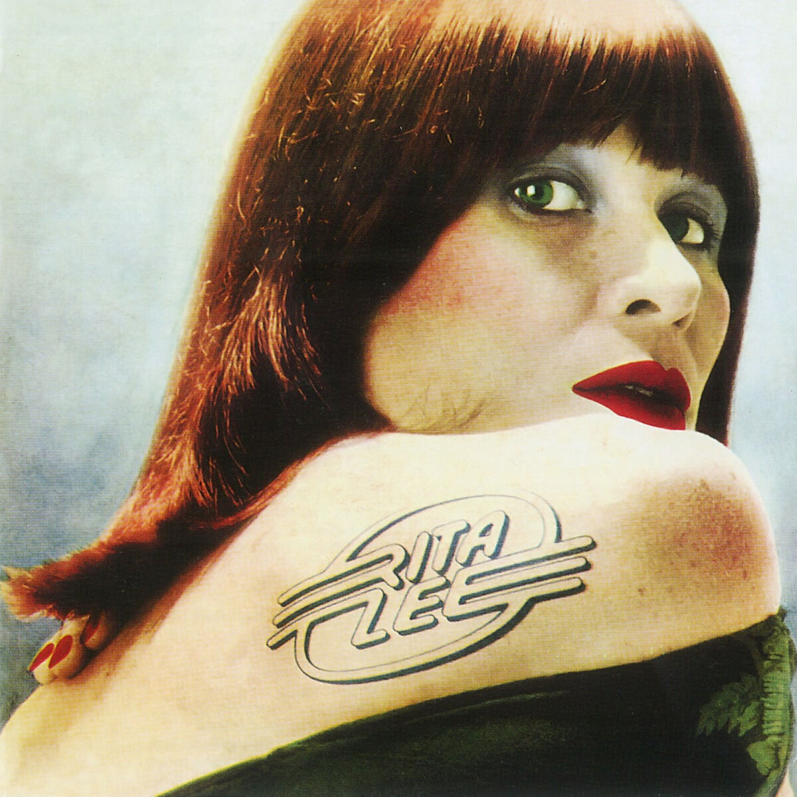

Rainha do rock brasileiro, Rita Lee é um dos maiores nomes da música nacional. De seu período com os Mutantes à carreira solo, sempre movimentou a cultura brasileira muito além das canções. Seu estilo, que combinava com a personalidade irreverente, ficou marcado na moda e foi uma grande referência do tropicalismo. Ela fazia os figurinos das capas dos próprios álbuns e vestia os integrantes dos Mutantes com produções que traduziam o movimento tropicalista e que marcaram a influência do rock brasileiro na moda. O cabelo vermelho com franja, os óculos redondos e as peças quase teatrais viraram marca registrada da cantora, que teve parte do seu acervo exibido em uma mostra que homenageava seus looks icônicos.
